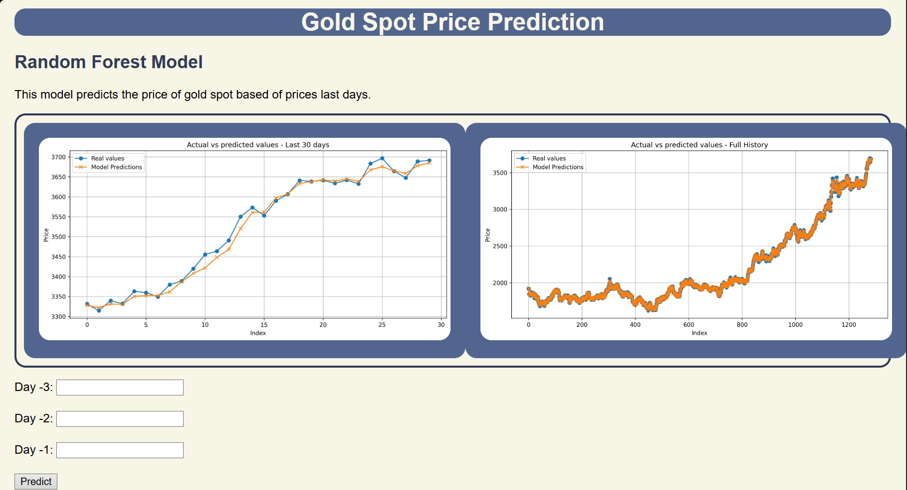

Senior Data Scientist | Msc Industrial Eng | Supply Chain | Transitioning to MLOps Engineer | Business Intelligence.
Project ML - Random Forest API with Docker and Flask
This project implements a Random Forest model that performs predictions using the data from the last 3 days.
The model is exposed through a REST API with Flask, and using Docker, an image is created so that the service can be easily deployed and accessed from a web page.
The main objective is to show the process of
using a trained model, exposing it through an API and making it accessible via the web.
View Demo
Code
Github-page
Preview
